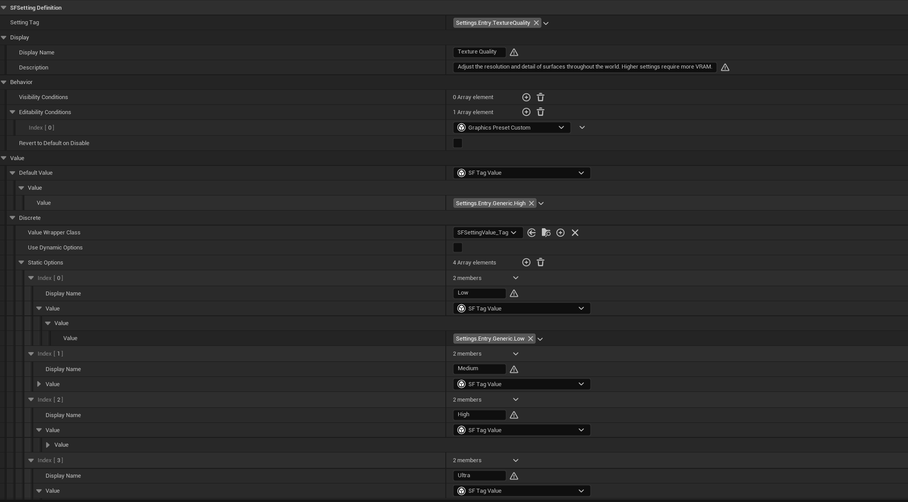

Settings Framework
Settings Framework is a data-driven game settings management system with a ready-to-use basic CommonUI interface.
1 - Overview
Settings Framework is a comprehensive and modular Unreal Engine 5 plugin designed to decouple settings data from the UI layer. By utilizing Data Assets for configuration and a dedicated Subsystem for runtime management, it allows developers to spin up a settings management system and UI for their projects in minutes.
Core Features
- Data-Driven Design: Define your setting definitions supporting various data types (boolean, scalar, discrete options, and keybind) and category hierarchies using Data Assets.
- Automated State Management: The Settings Subsystem automatically handles loading Data Assets at start up, managing setting values, and loading/saving from disk.
- Keybinding Support: Includes keybind collision detection based on collision channels and customizable resolution policies (Swap, Overwrite, Allow Duplicate).
- Dynamic Conditions: Easily configure condition logic to hide or disable specific settings based on runtime states.
- Basic UI Widgets: Built entirely on Epic's Common UI and Enhanced Input, the plugin includes a suite of fully navigable widgets that handle tabs, groups, and setting entries.
Structure
The plugin is divided into three distinct layers:
- The Registry & Data Assets: You define your settings and their metadata as Data Assets in the Editor.
- The Settings Subsystem: The C++ backend reads the registry, loads the save file, and acts as the singular source of truth for setting values at runtime.
- The User Interface: The UI simply listens to the Subsystem and visually represents the data, keeping the widgets clean and logic-free.

2 - Documentation Quick Links
Guides to get the plugin up and running in your project:
- Requirements & Installation Guide: Engine requirements, setup steps, and usage scenarios.
- Blueprint Guide: How to interact with the Settings Subsystem, and details about the included basic UI widgets.
- Step-by-Step Blueprint-Only Project Setup: Detailed guide for setting up a fresh Blueprint-only project with the plugin. Demo project download included.
- C++ API Reference: Full Doxygen-generated API documentation for native code extensions.
⚠️ Note on CommonUI and Enhanced Input dependency: This plugin utilizes Common UI and Enhanced Input from Epic Games for its UI widgets and navigation. Refer to the following guides to set up these features in your project:
Because Epic Games frequently updates and refactors Common UI with each major engine release, migrating this plugin to future Unreal Engine versions (e.g., UE 5.8+) may require manual updates to the provided widget Blueprints to resolve deprecations or structural changes.
3 - Example Project
Fully playable demonstration projects are available for download below. Exploring the demo projects is highly recommended to see exactly how the Data Assets and UI are configured.
4 - Support & Contact
If you encounter bugs or need technical assistance integrating the plugin into your project, please reach out via email:
Support Email: phamquocanh2580@gmail.com